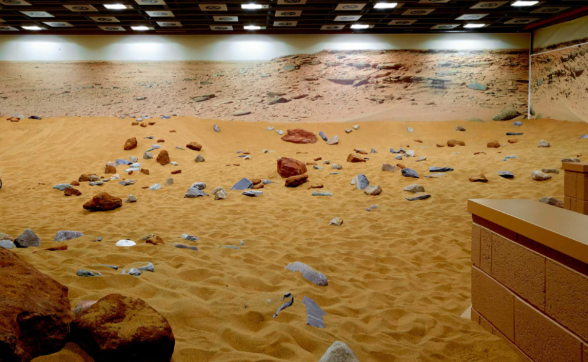
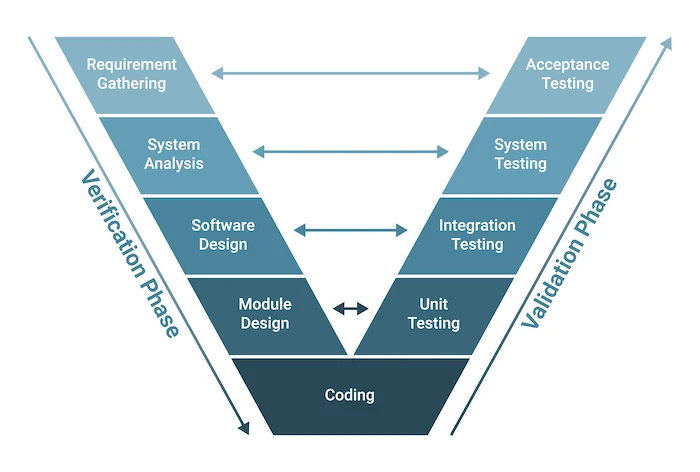
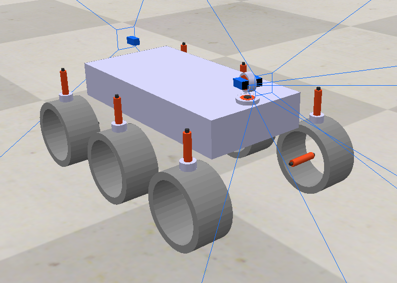
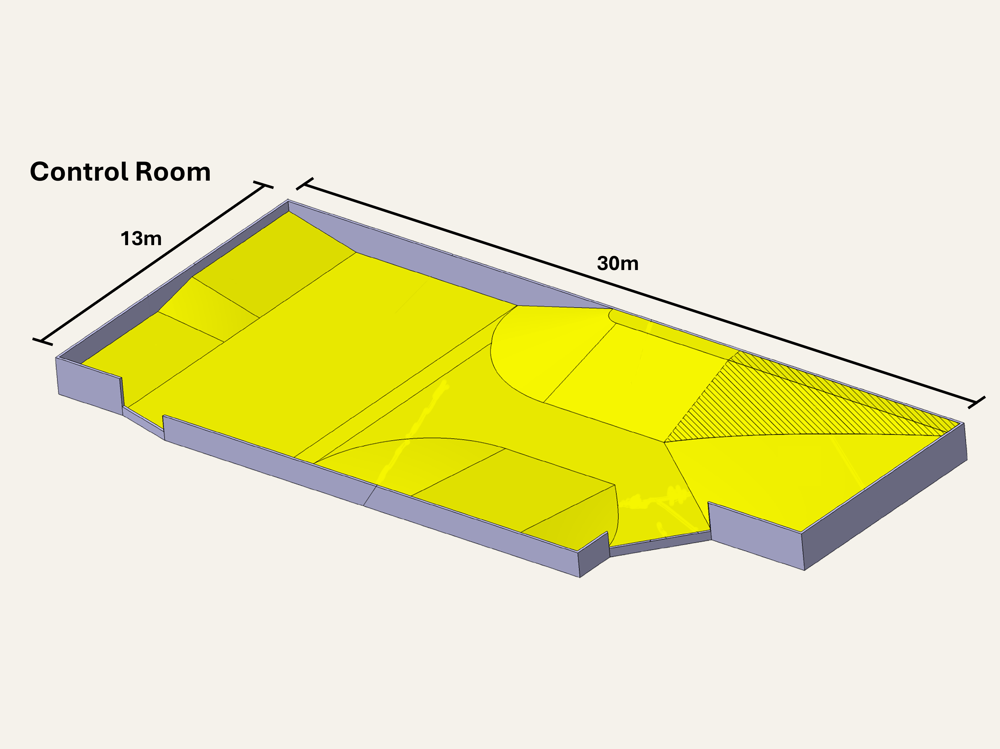
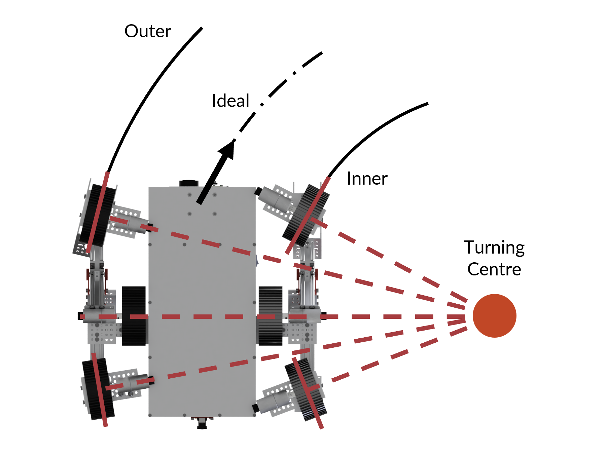
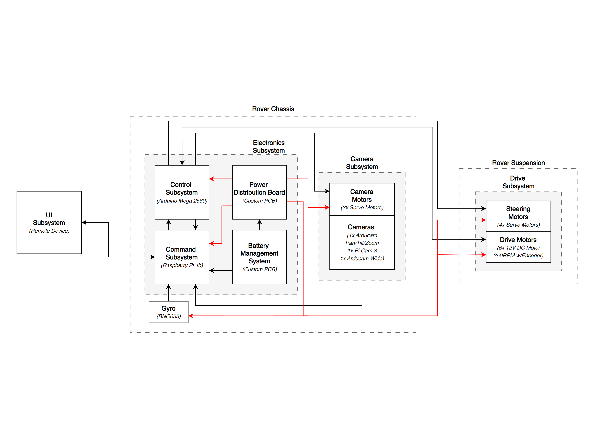

Olympus Rover Trials
Designing a competition rover to traverse the Airbus's Mars Yard.

The Problem
Design a competition rover capable of traversing Airbus's Mars Yard, an uneven, sandy environment with rocks up to 40cm tall, and scan as many points of interest as possible in the fastest time. The rover would be operated remotely from a command centre at up to 30m range, replicating the constraints of a real space mission.
The terrain demanded a rover that could navigate around obstacles entirely through its onboard cameras, while also handling slopes of up to 30°. This meant manoeuvrability, reliable vision, and a control system robust enough to perform under competition pressure.

The Approach

Followed the V-model of design, beginning with defining clear requirements to inform system and subsystem specifications, each with quantifiable criteria validated through module, subsystem, and integration testing.

A key decision was the onboard navigation system, central to the rover's core objective. Given its importance, early testing used basic navigation mockups across simulations and RC cars to trial different camera configurations before committing to a design. This informed a final configuration of an elevated, forward-facing fixture with both zoomed and wide-angle cameras providing 360° coverage, complemented by a rear camera for reversing.
Outcome
Implemented control algorithms in Simulink for Ackermann steering and point-turn across six independently steered and driven wheels, tuning the PID controllers using the Ziegler-Nichols method. Built a CoppeliaSim environment replicating the Airbus Mars Yard, incorporating the Flask UI, embedded control system, and full CAD model into a complete simulation package for end-to-end validation.
Gallery


